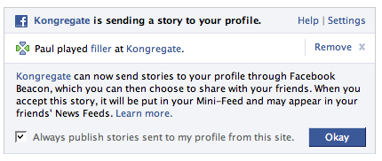

Facebook knows too much about what I do
This weekened, Digg pointed me to a new flash game called 'Filler'. I was kind of fun, and I risked a bit of carpal tunnel playing a few rounds. This morning, I signed onto facebook and was greeted with this notification:

This
made me feel a bit queasy. I didn't tell 'kongregate' who I was,
nor did I tell facebook that I played the 'filler' game. They just
worked it out for themselves.
At least facebook is asking me whether or not it should post the story
to my mini-feed... but I really think kongregate should have asked me
before it told facebook what I was doing.
First reaction a coworker had after I shared this game with him: "hey, facebook knows about it!"
I figure it's got to do with sharing the info contained in the cookies left by both sites. I'm not sure I'd really like websites to start sharing cookie information, and especially publishing the info afterwards.
I figure it could come down to chinese facebook saying "Jin searched the internet for information about corruption in china (this will be reported)".
Posted by Marc-O on January 14, 2008 at 05:24 PM EST #
This caused a big outcry a few months ago. Check moveon.org, and the general news sites.
Posted by Casey on January 14, 2008 at 07:55 PM EST #
If you have a Kongregate account you can turn this off in your account settings. Although at a time while playing the game you should've received a notification in the bottom left corner which would say
You played a game on Kongregate. Kongregate will send this to your facebook profile. (or something along those lines.)
then afterwards in the same notification window there should've been an is this ok, or don't publish this in my news feed links.
Posted by FRAGM3NT on January 15, 2008 at 07:05 PM EST #